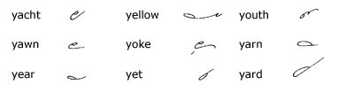
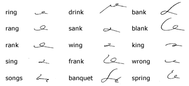
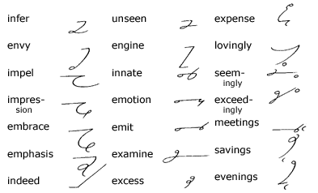
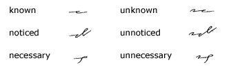
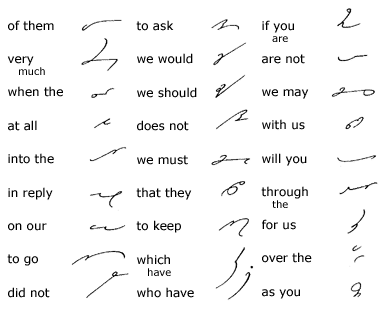
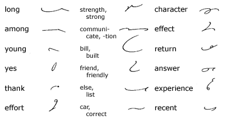
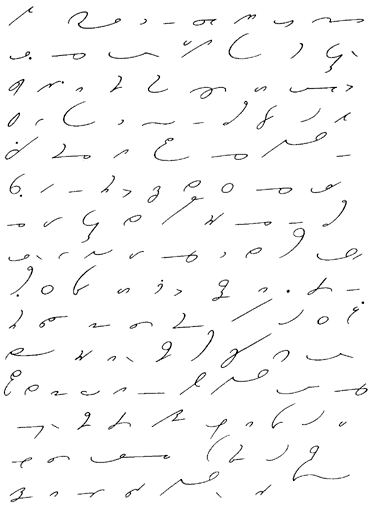

Unit
12
Method of Expressing Y
104. Y
has the sound of the long e, as in yacht, yoke,
and when followed by a hook vowel is expressed by the small circle.
Ye, as in year, yet, is expressed
by a small loop; ya, by a large loop.

The Signs for Ng and Nk
105.
The sound ng, as in ring, rang,
is expressed by n written at a slightly downward slant;
nk (sounded ngk), as in bank, rank,
is expressed by a longer stroke on the same slant:

Prefixes and Suffixes
106.
The vowel is omitted in the prefixes en, in,
un, em, im when the prefix is followed
by a consonant; when a written vowel follows the prefix, the initial
vowel is retained. Ex is expressed by es.
The suffix ings is expressed by a left
s and ingly by a small circle substituted for
the ing-dot:

107.
Negative words beginning with in, un, im
in which the n or m is doubled are distinguished
from the positive forms by omitting one of the doubled consonants
and inserting the initial vowel:

108. Frequent
Phrases

109. Brief
Forms for Common Words

110. Reading
and Dictation Practice

111. Writing
Practice
1. The couple were waiting at
the club to meet the other members of the party.
2. For years we have been following this particular
method of making reports at our bank.
3. His answer to the unusual communication was,
in effect, that his income was too small for him to think of such
a purchase.
4. The girl was wearing a new pale yellow sweater
of soft angora wool and a dashing green scarf at the skating rink.
5. The men were weary from the long swim in
the rough water of the bay.
6. After the wedding reception her uncle gave
the couple and their friends a banquet at the Hotel Tours.
My dear Sir: The orders
that we gave you in our letter of May 1 about all purchases were
clearly stated and very important, and we are glad that you have
so regarded them. In the future we hope that we shall not have to
question any of the purchases that you may make for our company.
You must remember that your position
with us is based mainly on your skill in choosing clothing that
is up to the minute in fashion and still cheap. We feel that we
should caution you to study every day the changing fashions and
at the same time keep your eye on the economic situation in the
textile world.
We hope you can teach here soon enough
Saturday so that we may have a long chat. We want you to tell us
all about your recent trip and to help you plan your next trip to
Paris. Yours truly, Transcription Key to this
Unit
- Next Unit - |